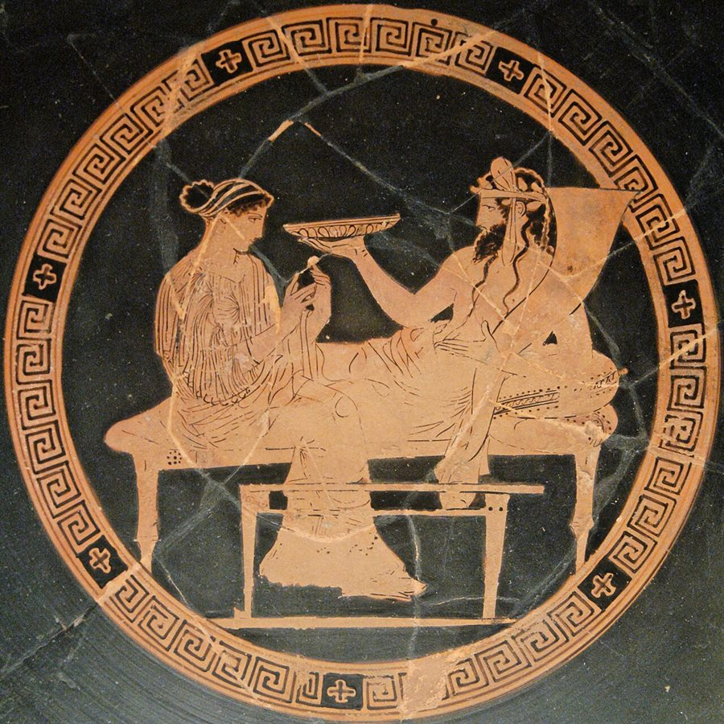

Dios del inframundo
Hades
Gobernante del mundo de los muertos. Según el mito, recibía las almas de quienes morían y vigilaba que ninguna escapara. No representaba la muerte en sí, sino el rey del lugar al que se llegaba después de morir.